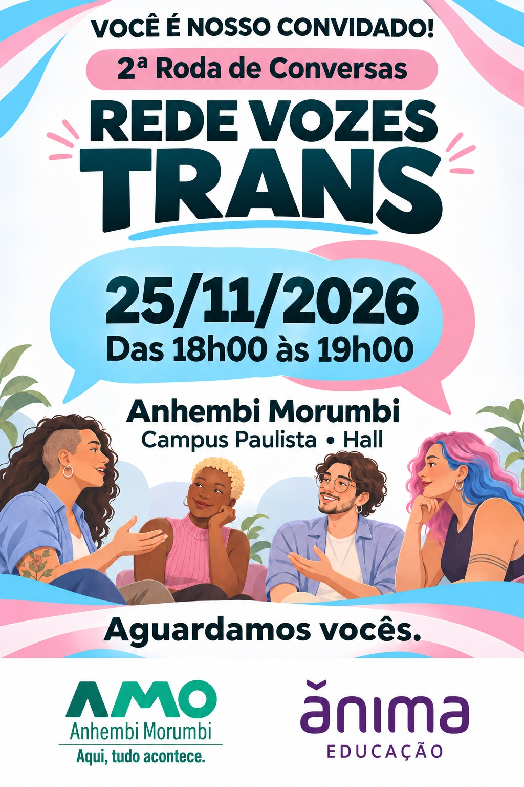

Conecta
Pessoas, histórias e territórios para criar vínculos e fortalecer a rede.
Uma rede que acolhe e transforma
Um projeto coletivo para amplificar vozes trans e construir pontes de cuidado, informação, apoio e transformação.
Uma Anhembi para todas as pessoas.

Vozes Trans · Anhembi MorumbiSobre a rede
A Rede Vozes Trans nasce para amplificar vozes trans, fortalecer narrativas e construir pontes de cuidado, informação, apoio e transformação.
Desenvolvida por estudantes da Universidade Anhembi Morumbi, a iniciativa aproxima pessoas, histórias e territórios por meio da escuta e da troca. Um convite para conhecer realidades, reconhecer direitos e imaginar espaços mais acolhedores.
Descubra o que nos moveMais acesso. Mais respeito. Mais pertencimento.
A rede em movimento
Pequenas atitudes e ações coletivas podem abrir caminhos para uma convivência com mais dignidade.
Pessoas, histórias e territórios para criar vínculos e fortalecer a rede.
Vozes trans em todas as plataformas, com visibilidade e presença.
Com empatia, respeito e cuidado — começando por ouvir.
Realidades por meio de informação e ação coletiva.
Uma cidade pode excluir.
Ou pode acolher.
Vozes em imagens
Conheça os materiais da rede: informação, convite e mensagens para compartilhar.
Um convite à escuta
Um espaço seguro de escuta, acolhimento e troca. Vamos conversar sobre as realidades, os desafios e as potências da comunidade trans.
Sua presença e sua voz são fundamentais para construir pontes e fortalecer nossa rede.
Vamos juntos?
Use o nome e os pronomes corretos. Questione preconceitos. Pequenas atitudes geram grandes transformações.
Acompanhe @vozestrans